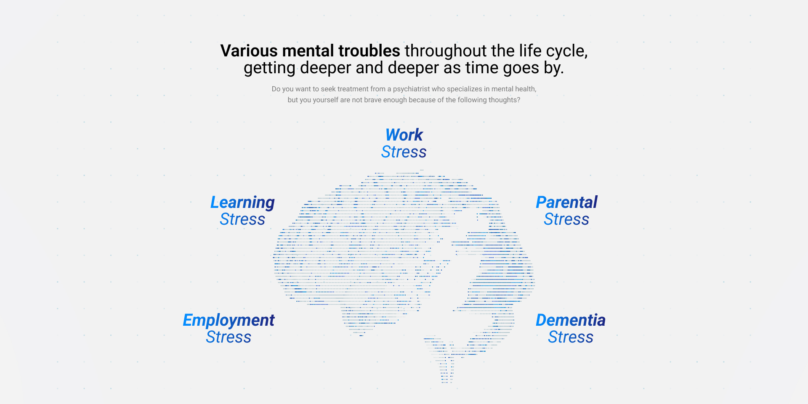
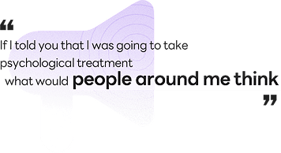

BORN FROM THE MEETING OF MENTAL AND TECH
MENTAL HEALTHCARE ONE STOP SOLUTION
MENTAL HEALTHCARE ONE STOP SOLUTION
A comprehensive mental health service with innovations that combine mental health and technology.

Various mental troubles throughout the life cycle,
getting deeper and deeper as time goes by.
getting deeper and deeper as time goes by.
Do you want to seek treatment from a psychiatrist who specializes in mental health,
but you yourself are not brave enough because of the following thoughts?
but you yourself are not brave enough because of the following thoughts?

Want to seek professional treatment,
but I don’t have the courage to do so.
but I don’t have the courage to do so.
Do you want to seek treatment from a psychiatrist who specializes in mental health,
but you yourself are not brave enough because of the following thoughts?
but you yourself are not brave enough because of the following thoughts?
-
“Can I really know my own mind by answering
a few mental health questions?” -
“It might not be a big deal to see a psychiatrist.
I might be able to solve this problem on my own.” -
“If I told someone I was receiving therapy from
a psychiatrist, how would they view me?”
Limitations of
existing mental health services
existing mental health services
Limitations and problems in accessing mental health services today
-
 1. Society has biases and negative
1. Society has biases and negative
attitudes toward seeking psychotherapy. -
 2. Subjective analysis, which focuses on
2. Subjective analysis, which focuses on
responses to psychological questionnaires. -
3. Lack of continuity in treatment due to
relying solely on paper-based information.
The existing MENTAL healthcare + TECH
Psychiatric therapy + with the latest advances in technology as follows :

- 1. Easy and convenient way to measure
mental health by analyzing biometric signals such as brain waves. - 2. Information and Communication
Technology with a large set of data, with enormous volumes and diverse formats. - 3. Biometric prediction to generate
personalized recommendations with
artificial intelligence (AI)
Delta Pyramax Co., Ltd.
The Exclusive Authorized Partner of